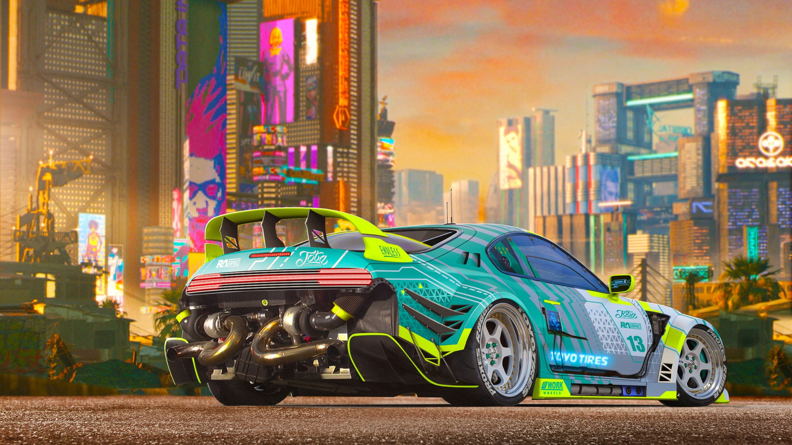
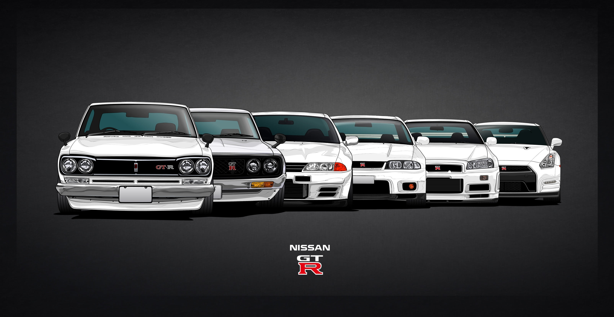
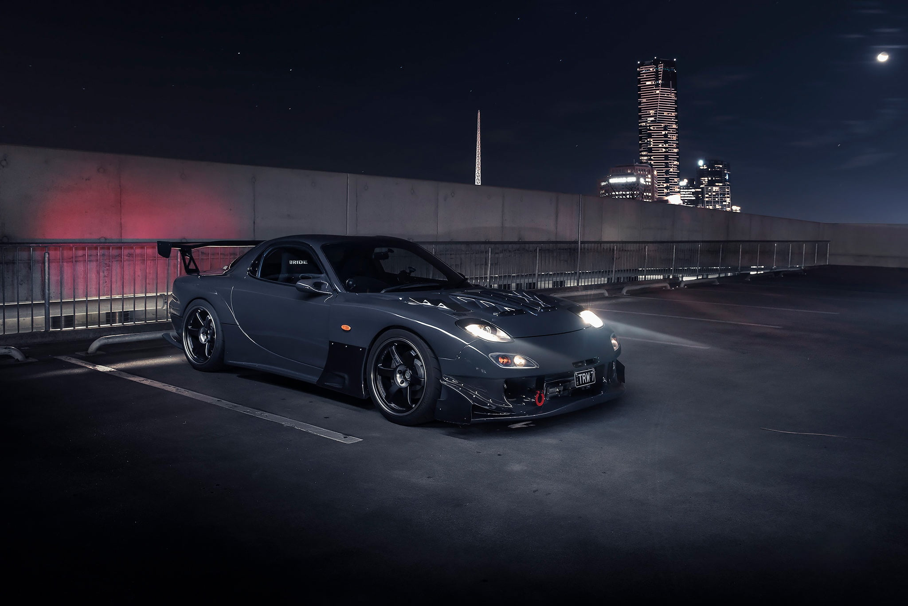
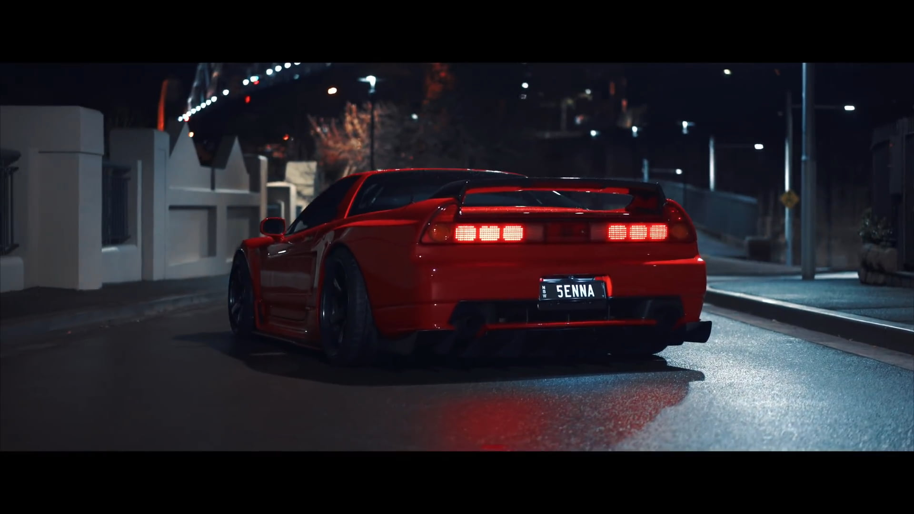

The History Of JDM (Japan Domestic Market)
The term JDM originally represented cars sold primarily in Japan, but it
has come to mean any high-performance Japanese model, whether a new or
used car sold exclusively in Japan or in multiple global markets,
including the U.S. and Canada.
That started to change in the 1980s, as sporty two-door coupes like the
Honda Prelude, Mazda RX-7, Nissan 240SX, and Toyota Supra and Celica
joined the Nissan 300ZX in U.S. showrooms. But the real pivot toward JDM
vehicles came in the 1990s, when magazines like Sport Compact Car and
Super Street focused on the growing enthusiasm for Japanese “tuner cars”
and the enthusiast culture forming around them. The Acura Integra, Honda
Civic, Mitsubishi Eclipse, and Nissan 240SX were among the most common
models featured in these magazines.
That started to change in the 1980s, as sporty two-door coupes like the
Honda Prelude, Mazda RX-7, Nissan 240SX, and Toyota Supra and Celica
joined the Nissan 300ZX in U.S. showrooms. But the real pivot toward JDM
vehicles came in the 1990s, when magazines like Sport Compact Car and
Super Street focused on the growing enthusiasm for Japanese “tuner cars”
and the enthusiast culture forming around them. The Acura Integra, Honda
Civic, Mitsubishi Eclipse, and Nissan 240SX were among the most common
models featured in these magazines.
By the early 2000s additional JDM models had made the leap to U.S.
showrooms, including the all-wheel-drive Subaru Impreza WRX STI and
Mitsubishi Lancer Evolution (or Evo). The Honda S2000, a new
rear-wheel-drive sports car with a 6-speed manual transmission and 9,000
rpm redline, added to the momentum, as did a little movie called The
Fast and The Furious.
This relatively low-budget, performance-car-themed film put a heavy
emphasis on JDM cars sporting numerous aftermarket car parts. Honda
Civic and Mitsubishi Eclipse variants, utilizing large spoilers and
nitrous oxide, along with true JDM cars like the right-hand drive Nissan
Skyline GT-R, helped validate the film with JDM fans. The Fast and The
Furious was a huge box-office success, inspiring more than 10
sequels/spin-offs, and popularizing terms like nitrous oxide,
supercharger, and twin turbo.
While most automotive enthusiasts still wouldn't put JDM cars on the
same plane as European supercars from BMW,s M Sport group, Ferrari,
Mercedes-AMG, or Porsche, there,s no denying the rising interest, and
market value, of the following JDM classic cars.
Toyota Supra
Nissan Skyline GT-R
Mazda RX-7
Honda NSX

Initially a Japanese market Celica spin-off model, the Toyota Supra went on sale in the U.S. in 1980 and by 1994 it offered a powerful twin-turbo 2JZ engine making over 320 horsepower. Toyota ended U.S. sales in 1998 but continued sales in Japan until 2002. A new Supra, developed largely by BMW, debuted in 2020.

An all-wheel-drive, turbocharged coupe, the Skyline GT-R was never officially sold in the U.S., though many Japan-market GT-Rs have been imported and are easy to spot with their steering wheel on the right side. The modern Nissan GT-R is the first official version of the Skyline GT-R sold in the U.S.

The Mazda RX-7 is a front-engine, rear-wheel-drive, rotary engine-powered sports car that was manufactured and marketed by Mazda from 1978 until 2002 across three generations, all of which made use of a compact, lightweight Wankel rotary engine.

The Honda NSX, marketed in North America as the Acura NSX, is a two-seat, mid-engined coupe sports car manufactured by Honda.